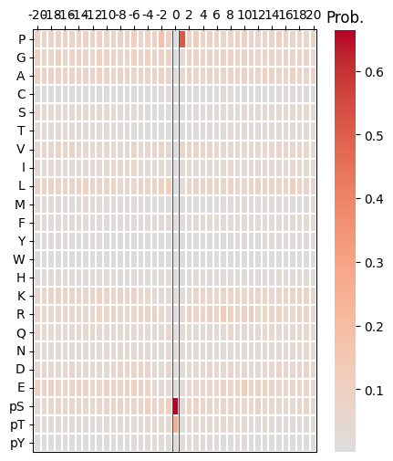
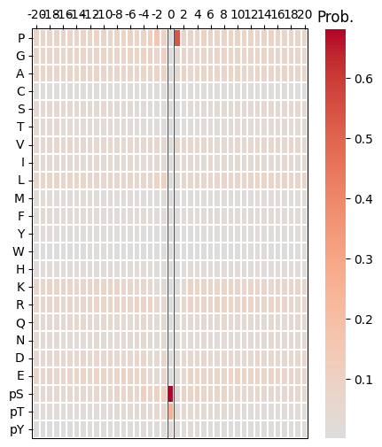
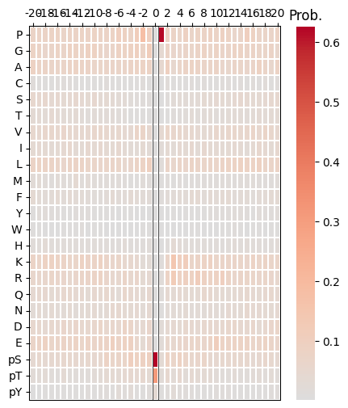
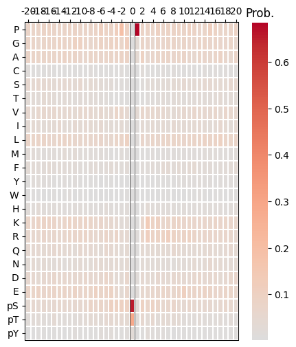

import pandas as pd
from katlas.train import *
from katlas.dnn import *
from fastai.vision.all import *
from katlas.pssm import *Predict
cddm_unk = pd.read_parquet('raw/kd_similar_cddm.parquet')cddm_unk = cddm_unk[cddm_unk.within_threshold].copy()# from katlas.data import *
# kd = Data.get_kd_uniprot()t5 = pd.read_parquet('raw/t5_kd.parquet')test_cddm = t5.loc[cddm_unk.index].reset_index()Predict
sample=pd.read_parquet('train/cddm_t5.parquet')target_col = sample.columns[~sample.columns.str.startswith('T5')]target_colIndex(['-20P', '-19P', '-18P', '-17P', '-16P', '-15P', '-14P', '-13P', '-12P',
'-11P',
...
'11pY', '12pY', '13pY', '14pY', '15pY', '16pY', '17pY', '18pY', '19pY',
'20pY'],
dtype='object', length=943)feat_col = test_cddm.columns[1:]feat_colIndex(['T5_0', 'T5_1', 'T5_2', 'T5_3', 'T5_4', 'T5_5', 'T5_6', 'T5_7', 'T5_8',
'T5_9',
...
'T5_1014', 'T5_1015', 'T5_1016', 'T5_1017', 'T5_1018', 'T5_1019',
'T5_1020', 'T5_1021', 'T5_1022', 'T5_1023'],
dtype='object', length=1024)n_feature = len(feat_col)
n_target = len(target_col)n_feature,n_target(1024, 943)def get_cnn(): return PSSM_model(n_feature,n_target,model='CNN')from tqdm import tqdmdef get_ensemble_pred(test_df, model_name,nfold=5):
ensemble = None
for i in tqdm(range(nfold)):
test_pred = predict_dl(test_df,
feat_col,
target_col,
model_func=get_cnn, # model architecture
model_pth=f'{model_name}_fold{i}', # only name, not with .pth
)
if ensemble is None:
ensemble = test_pred.copy() # start with first prediction
else:
ensemble += test_pred # accumulate
ensemble /= 5
return ensemblepred = get_ensemble_pred(test_cddm,'cnn_cddm')100%|████████████████████████████████████████████████████████████████████████████████████████████████| 5/5 [00:09<00:00, 1.89s/it]pred.index=cddm_unk.indexpred.to_parquet('raw/pred_new_cddm.parquet')pred| -20P | -19P | -18P | -17P | -16P | -15P | -14P | -13P | -12P | -11P | ... | 11pY | 12pY | 13pY | 14pY | 15pY | 16pY | 17pY | 18pY | 19pY | 20pY | |
|---|---|---|---|---|---|---|---|---|---|---|---|---|---|---|---|---|---|---|---|---|---|
| A0A8I3S724_AURKA_CANLF_KD1 | 0.058566 | 0.047093 | 0.038226 | 0.060463 | 0.059130 | 0.054548 | 0.054172 | 0.049232 | 0.047558 | 0.059301 | ... | 0.011735 | 0.011759 | 0.015638 | 0.011591 | 0.011264 | 0.015564 | 0.016801 | 0.013457 | 0.016039 | 0.015655 |
| A0A8I5ZNK2_OXSR1_RAT_KD1 | 0.062874 | 0.044732 | 0.037693 | 0.069321 | 0.069203 | 0.048762 | 0.055191 | 0.046259 | 0.054198 | 0.052150 | ... | 0.009368 | 0.014231 | 0.010534 | 0.009535 | 0.007872 | 0.018224 | 0.026171 | 0.012271 | 0.011304 | 0.023689 |
| A0JM20_TYRO3_XENTR_KD1 | 0.043008 | 0.046507 | 0.053662 | 0.055524 | 0.040229 | 0.046882 | 0.063473 | 0.061160 | 0.048801 | 0.045304 | ... | 0.013642 | 0.019686 | 0.012491 | 0.010734 | 0.012548 | 0.011841 | 0.014706 | 0.006341 | 0.018013 | 0.015684 |
| A0JNB0_FYN_BOVIN_KD1 | 0.045568 | 0.047251 | 0.050904 | 0.050163 | 0.047431 | 0.048869 | 0.060826 | 0.054838 | 0.052466 | 0.041447 | ... | 0.015842 | 0.020160 | 0.014444 | 0.012258 | 0.011229 | 0.013144 | 0.014181 | 0.007040 | 0.017035 | 0.017139 |
| A0M8R7_MET_PAPAN_KD1 | 0.042183 | 0.045986 | 0.049634 | 0.047944 | 0.040924 | 0.046336 | 0.061326 | 0.060749 | 0.046776 | 0.042471 | ... | 0.014246 | 0.020650 | 0.013831 | 0.011233 | 0.012048 | 0.012316 | 0.014068 | 0.006437 | 0.017606 | 0.016929 |
| ... | ... | ... | ... | ... | ... | ... | ... | ... | ... | ... | ... | ... | ... | ... | ... | ... | ... | ... | ... | ... | ... |
| Q9Z2B9_KS6A4_MOUSE_KD1 | 0.062978 | 0.046201 | 0.043306 | 0.047586 | 0.060256 | 0.057318 | 0.069925 | 0.054924 | 0.057089 | 0.056542 | ... | 0.009725 | 0.009109 | 0.013359 | 0.011704 | 0.007290 | 0.015323 | 0.023502 | 0.008287 | 0.016022 | 0.014946 |
| Q9Z2G7_GRK7_ICTTR_KD1 | 0.069125 | 0.050716 | 0.028324 | 0.078284 | 0.088472 | 0.043415 | 0.070791 | 0.038503 | 0.033959 | 0.072650 | ... | 0.007297 | 0.005966 | 0.006196 | 0.012518 | 0.006082 | 0.022531 | 0.026919 | 0.019598 | 0.009070 | 0.015517 |
| Q9Z2R9_E2AK1_MOUSE_KD1 | 0.052221 | 0.055948 | 0.027863 | 0.051704 | 0.028007 | 0.048318 | 0.038666 | 0.040143 | 0.050289 | 0.033800 | ... | 0.007105 | 0.004360 | 0.002075 | 0.015135 | 0.002591 | 0.014851 | 0.005058 | 0.013597 | 0.005913 | 0.015426 |
| Q9Z2W1_STK25_MOUSE_KD1 | 0.053220 | 0.045374 | 0.031947 | 0.051374 | 0.052299 | 0.055456 | 0.054058 | 0.051449 | 0.048602 | 0.050390 | ... | 0.010350 | 0.012648 | 0.010529 | 0.008406 | 0.008619 | 0.020545 | 0.017907 | 0.013738 | 0.011008 | 0.021155 |
| W0LYS5_CAMKI_MACNP_KD1 | 0.075941 | 0.072653 | 0.044654 | 0.047528 | 0.066485 | 0.048711 | 0.076716 | 0.036033 | 0.064526 | 0.062745 | ... | 0.012258 | 0.011500 | 0.007500 | 0.017919 | 0.009034 | 0.013052 | 0.025094 | 0.009916 | 0.012742 | 0.014000 |
1195 rows × 943 columns
test
cdks = cddm_unk[cddm_unk.closest_pos_index.str.contains('CDK')]for i in cdks.head(5).index:
print(i)
plot_heatmap(recover_pssm(pred.loc[i]))
plt.show()
plt.close()B2MVY4_CDK4_SHEEP_KD1
O35831_CDK17_RAT_KD1
O55076_CDK2_CRIGR_KD1
P11440_CDK1_MOUSE_KD1
P13863_CDK1_CHICK_KD1